The Farm
| The Farm | |
 |
| “ | “You’ve inherited your grandfather’s old farm plot in Stardew Valley. Armed with hand-me-down tools and a few coins, you set out to begin your new life.” |
Upon completing the Character Creation and the initial dialogue with Robin at the Bus Stop, this is the location the player is transported to. Inherited from their grandfather after quitting their job at Joja Corporation, it is their duty to restore the land and make use of it.
- See Getting Started for more information
Farm Maps
- Main article: Farm Maps
When creating a new character players can select from a number of different maps for their farm. Each of these maps offer unique benefits, and favor specific skills.
The player's farm house will appear the same from the outside on all maps, but begins with a uniquely styled interior after the maps theme. These house interiors offer different furniture pieces, wallpaper and flooring for each map.
Each map will change how the farm appears on the game map slightly. Most simply change how the farm area appears, but some change areas outside the farm on the map - the Forest farm extends the forest to the west toward the farm and the Riverland map connects to a river which flows south of the desert. These changes are only reflected on the world map; no changes are made to the actual game world outside the player's farm based on map selection.
After selecting a map it cannot be changed; characters are permanently tied to their map type once created. Each map takes up the same area, but there are different amounts of usable, farmable, buildable land on each.
| Name | Description | Associated Skill |
|---|---|---|
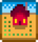 |
||
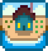 |
|
|
Forest Farm
|
|
|
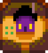 |
|
|
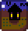 |
|
|
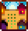 |
|
Multiplayer |
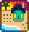 |
|
|
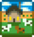 |
|
Farmhouse

- Main article: Farmhouse
The Farmhouse is the only form of player housing. By default, the house features a TV, a single bed, a picture, a table and chair, decorative dishes, and a fireplace. The farmhouse can be upgraded 3 times: once by paying  10,000g and giving 450 Wood to Robin, and again by paying
10,000g and giving 450 Wood to Robin, and again by paying  65,000g and giving 100 Hardwood to Robin. The final upgrade adds a cellar which can age wine and cheese in Casks; it costs
65,000g and giving 100 Hardwood to Robin. The final upgrade adds a cellar which can age wine and cheese in Casks; it costs  100,000g. All upgrades take approximately 2 full days to complete.
100,000g. All upgrades take approximately 2 full days to complete.
Marriage
- Main article: Marriage
Upon completion of the marriage ceremony, the person whom the player marries will have a portion of their room moved into the right side of their house. However, this requires at least a tier 2 farmhouse.
Shipping Box
- Main article: Shipping
The shipping box is a rectangular wooden box located to the right of the farmhouse. Items with value can be placed inside the box (excluding tools) and will be sold overnight with the total earnings from selling the items displayed once the player goes to bed for the night. The latest item placed in the box can be recovered, but items placed before the latest item may not be recovered. For example, if the player places 10 corn in, it may be recovered before shipping out for the night, however, if the player places an eggplant on top of the corn, only the eggplant may be recovered, but the corn reaches its inevitable fate of being sold.
Mailbox
- Main article: Letters
The mailbox is located to the bottom-right corner of the farmhouse. It is used to receive and read incoming letters. Any unread mail will be indicated by the display of a floating speech bubble containing an envelope icon hovering over the mailbox.
Crops
- Main article: Crops
Seeds for crops can be purchased from Pierre in his shop or the JojaMart with the selection correlated to the active season, or obtained from completing Community Center bundles or Museum rewards. However, these seeds can only be planted on the farm or in the Greenhouse. In order to begin the process of growing a crop, the player must find a clear 1x1 area to till with a hoe. Once tilled, the seed may be planted and watered. All crops must be watered daily in order to continue growing. Once a crop is fully grown, it may be harvested. Most crops grow once, and the entire plant is harvested, but for crops like berries and corn, these crops only have their edible portions harvested, allowing the crop to grow back faster than when it was planted. However, once the season for the crop ends, it will wither and die immediately.
Fruit Trees
- Main article: Fruit Trees
Fruit Tree seeds can be purchased from Pierre's Shop and occasionally from the Traveling Cart and sowed on the farm in the center of a 3x3 square. All fruit trees take approximately 28 days to mature completely, and, depending on the season, will produce 1 fruit per day. Fruit trees do not produce fruit during winter.
Crows
Crows may randomly spawn on the farm each morning there are crops planted. Crows destroy crops by eating them. To avoid this, players may craft Scarecrows and place them within range of growing crops. Collectible Rarecrows can also be used to scare off crows.
Buildings
- Main article: Carpenter's Shop
Buildings can be purchased from Robin in the Carpenter's Shop at varying prices. Farm buildings are required to house animals. Both coops and barn buildings have upgrades, and the base building must be purchased before the upgrade. Each of these buildings can be built multiple times to support more animals.
Tip: It's a good idea to build a silo before purchasing animals to place in farm buildings, so there is a place to store hay for them to eat.
Debris
Farm debris is a naturally regenerating element on the Farm. It includes rocks, twigs, and weeds.
Small Plants
| Image | Name | Tool Required | Drops | Propagation |
|---|---|---|---|---|
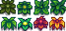 |
Weed | Any | Respawns randomly; spreads destructively | |
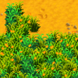 |
Grass | Scythe | Respawns randomly; Spreads non-destructively |
Trees
- Main article: Trees
Apart from Fruit Trees, there are 3 types of common trees that grow in Stardew Valley: Maple Trees, Oak Trees, and Pine Trees.
| Tree | Tool Required | Drops | Propagation |
|---|---|---|---|
| Mature Maple Tree | 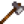 Axe |
Maple seeds spread non-destructively | |
| Mature Oak Tree | Axe | Acorns spread non-destructively | |
| Mature Pine Tree | Axe | Pine cones spread non-destructively | |
| Tree Seedling (stage 4) | Axe | Grows to next stage | |
| Tree Seedling (stages 2-3) | Any | Grows to next stage | |
| Fallen Seed | Axe 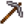 Pickaxe |
Grows to stage 2 seedling |
Note: Seeds will not drop until Foraging Skill Level 1 is acquired. Tree seedlings that have not yet grown beyond their first stage will drop nothing.
Wood
Apart from trees, wooden debris is split into three types, two of which produce Hardwood.
| Image | Name | Tool Required | Drops | Propagation |
|---|---|---|---|---|
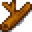 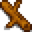 |
Twig | Axe | Spawns randomly; spreads destructively | |

|
Large Stump | 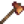 Copper Axe |
Only on Forest Farm, Four Corners and Beach Farm | |
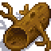 |
Large Log | 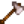 Steel Axe |
Never |
Stone
- Main article: Stone
The farm's rock debris is not a primary way of farming stone (see The Mines). Stone debris is split into two types, both dropping stone.
| Image | Name | Tool Required | Drops | Propagation |
|---|---|---|---|---|
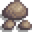 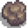 |
Rock | Pickaxe | Spawns randomly; spreads destructively | |
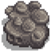 |
Boulder | 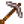 Steel Pickaxe |
Never |
Unique Areas
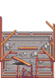 |
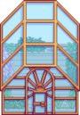 |
| Initial | Repaired |
There are three unique areas on The Farm (not including player placeable buildings,e.g., Barn, The Coop, etc.).
Greenhouse
- Main article: Greenhouse
The Greenhouse in the beginning is unusable, as the player seems to assume it was destroyed by a storm. Completing the Pantry section of the Community Center will cause the greenhouse to be restored, and be of use to the player. It features a 12x10 plot for crops, and a water trough to refill the Watering can. Any seeds from any season may be planted here, even during the winter, giving the player a large advantage. Buildings may not be placed in the greenhouse.
The Cave
- Main article: The Cave
Once total earnings reach  25,000g, Demetrius meets the player at their door the next day. He states that he is working on research and asks if they wouldn't mind if he used their cave. He gives the player the option to either have fruit bats in the cave, or to install 6 mushroom boxes. Fruit bats will leave random fruit in the cave overnight, while the Mushroom Cave has a Dehydrator that dries out mushrooms, and mushroom boxes that will produce one of five different types of mushrooms on a regular basis.
25,000g, Demetrius meets the player at their door the next day. He states that he is working on research and asks if they wouldn't mind if he used their cave. He gives the player the option to either have fruit bats in the cave, or to install 6 mushroom boxes. Fruit bats will leave random fruit in the cave overnight, while the Mushroom Cave has a Dehydrator that dries out mushrooms, and mushroom boxes that will produce one of five different types of mushrooms on a regular basis.
Grandpa's Shrine
- Main article: Grandpa
| “ | “Wait for my return at the dawn of the 3rd year.” |
Grandpa's Shrine is a landmark located in the northwestern corner of the farm. Upon encountering the shrine, a note is present that reads "Wait for my return at the dawn of the 3rd year". Upon reaching the dawn of the 3rd year, a manifestation of grandpa appears and evaluates the player's performance.
After their third year of being on the farm and his initial evaluation, if the player got less than four candles, his shrine will still be active.
| “ | “There's a diamond-shaped slot in the shrine... was that always there?” |
If the player places a Diamond into Grandpa's Shrine, he will reappear and re-evaluate the farm the next day. He will apologize for being too harsh and promptly give them a new answer if the player made some changes. Interacting with the shrine after this event will produce a Statue Of Perfection, if all four candles are lit.
After achieving Perfection, a stone carving of a Stardrop will appear above the shrine.
Additional Information
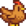
See: Animals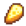
See: Artisan Goods
History
- 1.0: Introduced.
- 1.1: Added four new farm maps to character creation, each favoring different skills.
- 1.4: Added new multiplayer focused map: Four Corners Farm.
- 1.5: Added Beach Farm. Once unlocked, the Greenhouse can now be moved at Robin’s shop. A stone carving of a Stardrop will now appear above Grandpa's Shrine after achieving Perfection.
- 1.6: Added a new farm type: Meadowlands Farm. The farmhouse and pet bowl can now be moved through Robin's menu.
- 1.6.15: Debris no longer spread under giant crops.
| Locations | |
|---|---|
| Locations | Backwoods • Beach • Bus Stop • Calico Desert • Cindersap Forest • Farm • Farm Cave • Farm Pond • Graveyard • Ginger Island • Mastery Cave • Minecart • Mines • Mountain • Mutant Bug Lair • Pelican Town • Quarry • Quarry Mine • Railroad • Secret Woods • Sewers • Skull Cavern • Summit • Tunnel • Volcano Dungeon • Witch's Swamp |